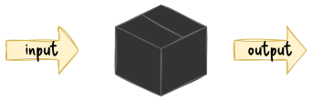

week 10 summary
gergo.pinter@uni-corvinus.hu
V model [1]
- each phase has output and a review process
- errors are found at early stage
- decreases the risk of failure
- testing is done in a hierarchical perspective
- review is a testing process usually without executing the code

test pyramid


the turtle and rabbit figures by Delapouite under CC BY 3.0 via game-icons.net
test doubles – mock object types
there is no open standard for categories
- dummy
- stub
- spy
- mock
- fake
![reproduction of figure 2 from [3]](figures/spectrum_of_test_doubles.drawio.svg)
these are from the book xUnit test patterns: Refactoring test code – by Gerard Meszaros [4]
test-driven development (TDD)
- write test before writing the tested code
- without the called unit the test will fail
- the called function does not exist
- write code, that makes the test pass
- improve the code quality
- e.g., make it clear and clean
- both the test and tested code

As the tests get more specific, the code gets more generic.
– Robert C. Martin, The Cycles of TDD [5]

testing approaches
black box

- examining / testing the functionality without knowing the inner structure
- works at all levels: unit, integration, system, acceptance
- also for debugging a legacy code
white box

- testing the internal structure as opposed to its functionality
- often associated to unit testing, but also works on higher levels (i.e., integration, system)